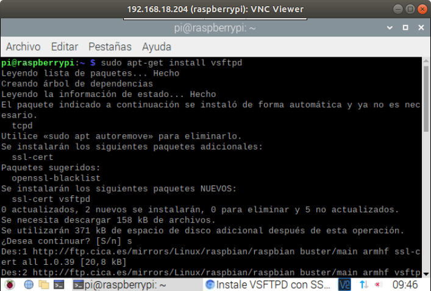
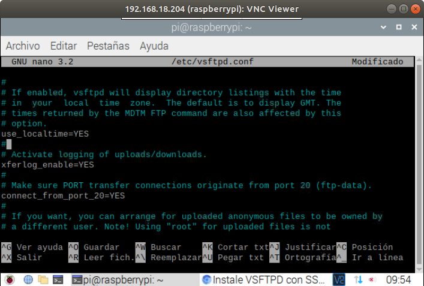
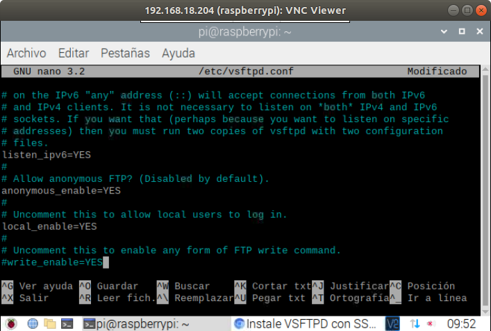
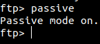
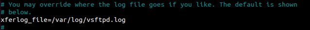
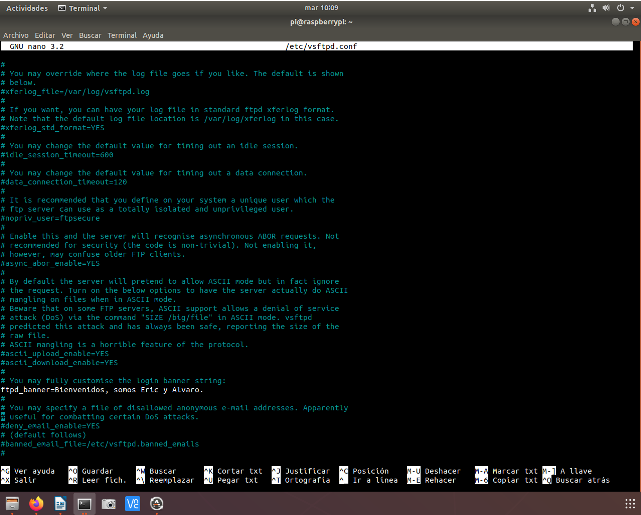

Instalamos el servidor vsftpd.
Comprobamos que esté habilitado el servidor anónimo.
Comprobamos que esté habilitado el servidor para usuarios del sistema.
Comprobamos que funcione el modo pasivo.
Comprobamos que estén habilitados los logs.
Cambiamos el mensaje de bienvenida.
